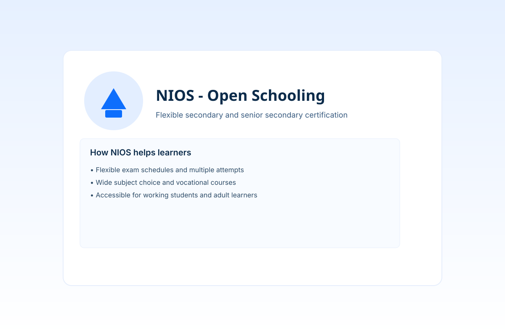

National Institute of Open Schooling (NIOS)
Flexible open schooling for learners seeking alternative routes to secondary and senior secondary certification.
Official NIOS Website
About NIOS
NIOS (National Institute of Open Schooling) provides an alternative open schooling system that offers Secondary and Senior Secondary courses, vocation and life enrichment programmes, and exam flexibility to accommodate diverse learners. It is designed for learners who cannot attend regular schools due to distance, work, or other constraints.
Key Features
- Flexible examination schedules and multiple chances per year.
- Wide range of subjects and vocational courses.
- Recognition for certification equivalent to regular board exams.
- Study materials and learner support through study centres.
Advantages of NIOS
- Accessible for working students and adult learners.
- Cost-effective—lower fees than many regular boards.
- Opportunity to combine vocational and academic subjects.
- Pathways to higher education and skill development.
Who Can Apply?
NIOS welcomes school-age learners, out-of-school youth, adult learners, and anyone seeking a flexible route to secondary and senior secondary certificates. Specific eligibility for vocational courses may vary by programme.
Admission Process
- Check the official NIOS website for admission windows and study centre listings.
- Register online or at an authorised NIOS study centre with required documents and identity proof.
- Choose your subjects (academic and/or vocational) as per programme rules.
- Pay the enrolment and subject fees to complete registration.
Examinations
NIOS conducts public examinations for Secondary and Senior Secondary courses typically twice a year, and some specialised examinations may run more frequently. Learners receive admit cards and results via the official NIOS portal.
How We Help You
At Kriya Coaching Classes, we support NIOS learners with:
- Personalised tuition for chosen subjects (theory and practice).
- Exam-oriented revision sessions and mock tests.
- Assistance with study plans, registration guidance, and paperwork.
- Vocational skill classes where applicable.
Our NIOS Services
- Subject-wise coaching (Mathematics, Science, Social Science, Languages)
- Exam revision bootcamps
- One-to-one mentoring and doubt-clearing
- Study material and assignment support
Fee Structure
The NIOS enrolment and subject fees are set by NIOS and may vary; Kriya's tuition fees are charged separately based on the subject package chosen. Typical tuition packages we offer:
| Package | Duration | Fee (INR) |
|---|---|---|
| Single Subject Coaching | 3 Months | 3,000 |
| Three Subject Package | 6 Months | 8,000 |
| Full Course (All Subjects) | 12 Months | 14,000 |
Note: The table above is indicative. For exact enrolment and NIOS fees, refer to the official site: nios.ac.in. Contact us for a personalised quote.